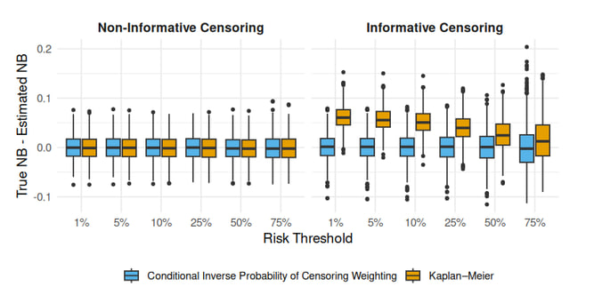
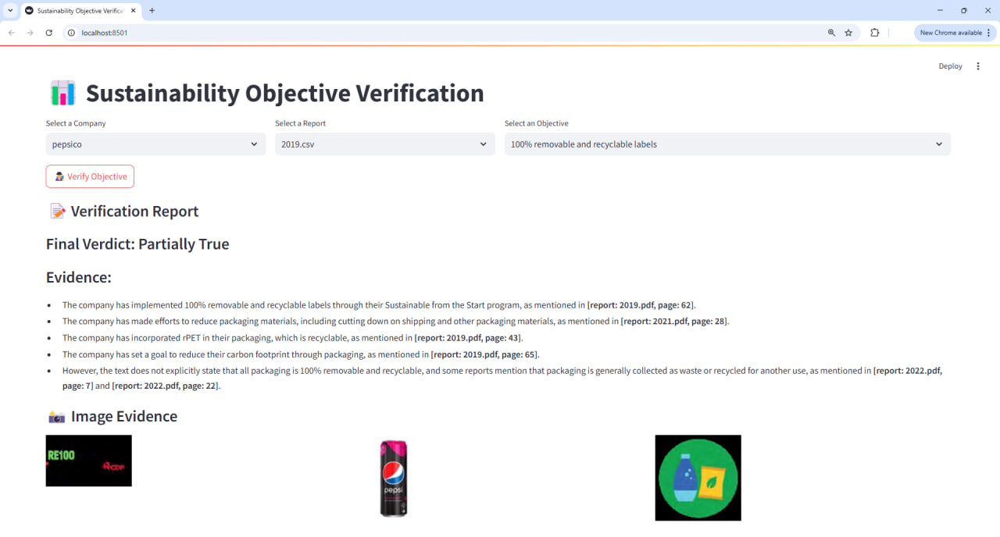
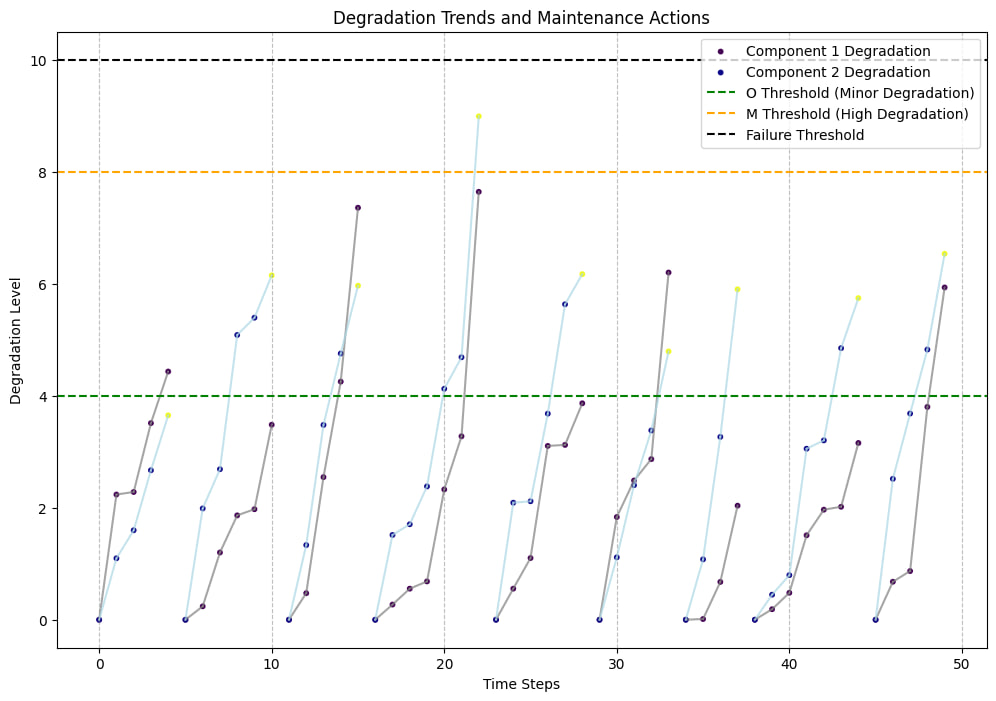
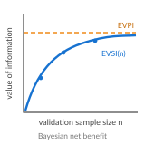
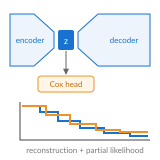
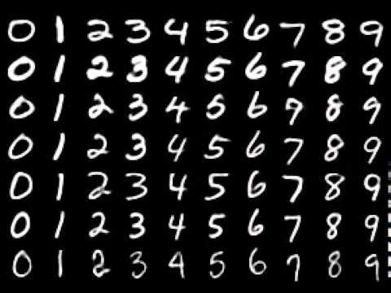
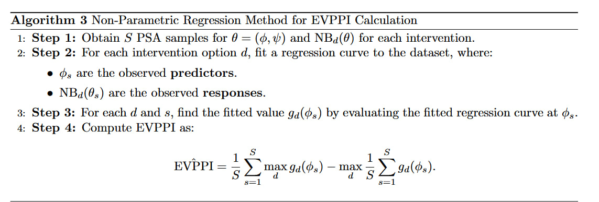
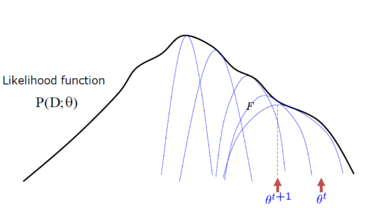
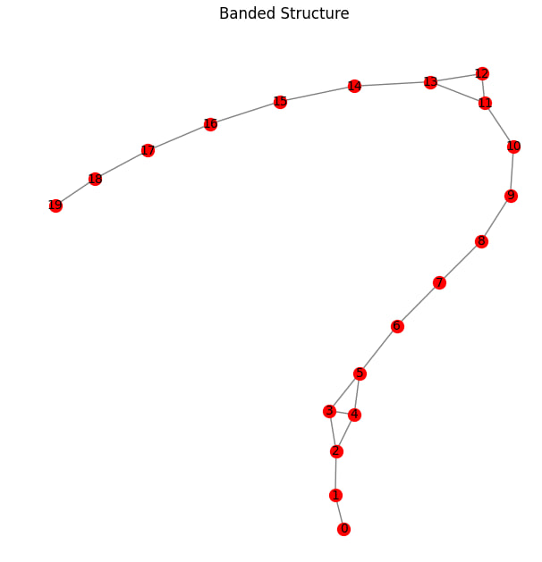

News
| Sep 2026 | Research assistant at Marquette University. |
| Aug 2026 | Research assistant at UBC and Maastricht University, developing voipred. |
| 2026 | Paper on robust decision curve analysis accepted as an oral at SMDM 2026. |
| 2025 | Paper on multimodal RAG for fact-checking accepted at IEEE ICDM 2025. |
|
Research
My research interests are trustworthy machine learning, natural language processing, and probabilistic machine learning.
I want to build ML systems whose predictions can be trusted:
- evaluated reliably under biased, censored, or missing labels,
- aware of how uncertain they are, and
- grounded in evidence.
Representative papers are highlighted.
|
|

|
Robust Decision Curve Analysis for Survival Risk Prediction Models in the Presence of Informative Censoring
Amirhosein Farahmand,
Mohsen Sadatsafavi,
Abdollah Safari,
Tae Yoon Lee
SMDM Annual Meeting, 2026 (Oral Presentation)
Under review at Statistics in Medicine
abstract
/
code
Using conditional inverse probability of censoring weighting, we estimate time-dependent net benefit when labels are missing not at random, so comparisons between risk models stay reliable for both standard and competing-risk outcomes. Contributed to the dcurves R package.
|
|

|
Fact-Checking Sustainability Objectives Using Multimodal Retrieval-Augmented Generation
Mohammad Mahdavi,
Amirhosein Farahmand,
Abolfazl Nadi
IEEE International Conference on Data Mining (ICDM), 2025
paper
/
code
A multimodal RAG pipeline in which LLMs retrieve evidence from text and images in a domain-specific knowledge base, reason across both modalities, and decide whether a claim is supported.
|
|

|
A Q-Learning Approach to Maintenance Policy Optimization for Series Systems with Degradation and Common Shocks
Amirhosein Farahmand,
Fatemeh Fartash,
Mohammadreza Yadollahi,
Sina Zarandi
11th Seminar on Reliability Theory and Its Applications, 2025
proceedings
/
code
Reinforcement learning (Q-learning) for finding optimal maintenance policies in series systems with gamma degradation and common shocks.
|
|

|
voipred: Bayesian Value of Information for Validating ML Models
University of British Columbia & Maastricht University, 2026 – present
code
An R package that combines Bayesian and frequentist net-benefit estimation to quantify uncertainty in model validation, with value-of-information measures (EVPI, EVSI) that say how much more data is worth collecting before a model is trusted.
|
|

|
Survival-Aware Functional Autoencoders
Marquette University, 2026 – present
A functional autoencoder that generalizes functional PCA, trained jointly on reconstruction loss and the Cox partial likelihood so the latent representation keeps survival-relevant structure. Includes an extension to competing risks and an R package implementation.
|
Selected Projects
More on my GitHub.
|
|

|
Deep Generative Models from Scratch
University of Tehran
code
Autoregressive models (NADE), VAEs (β-VAE, CVAE), GANs, energy-based models, normalizing flows (NICE), and DDPM/DDIM diffusion models with distillation, evaluated with IS, KID, and FID.
|
|

|
EVPPI Estimation for Predictive ML Models
University of Tehran
code
Expected value of partial perfect information for parametric prediction models, using Bayesian bootstrapping and Gaussian process regression on probabilistic sensitivity analysis samples.
|
|

|
Bayesian Gaussian Mixture Models for Stress Classification
University of Tehran
code
A Gaussian mixture model in a Bayesian framework for classifying stress levels, with parameters estimated by the EM algorithm.
|
|

|
Statistical Dependence and Graphical Models
University of Tehran
Graphical models of variable associations built from Pearson and distance correlation, with edges validated by Monte Carlo permutation tests; distance correlation recovered both linear and nonlinear dependencies on simulated data.
|
|
Experience
|
Research Assistant, Marquette University (remote), Sep 2026 – present
Research Assistant, University of British Columbia & Maastricht University (remote), Aug 2026 – present
Research Assistant, Stanford University, UBC & University of Tehran (remote), Mar 2025 – Oct 2026
Research Assistant, GISMA University of Applied Sciences (remote), Jun 2024 – May 2025
|
|
Teaching
|
Teaching Assistant, University of Tehran, Sep 2023 – Jan 2026
Statistical Machine Learning, Nonlinear Optimization, Stochastic Processes, Multivariate Probability, Linear Algebra, Calculus, Biostatistics
250+ students, 25+ assignment sets designed, 1,000+ submissions graded
|
|
Honors
|
Ranked 63rd nationwide (top 0.1%) in Iran's university entrance exam; admitted to the University of Tehran with a full tuition waiver
Ranked 9th nationwide in the M.Sc. Statistics entrance exam; nominated for the National Statistics Olympiad
Top 10% of the Computer Science cohort, University of Tehran
Merit-based travel scholarship, 11th Seminar on Reliability Theory and Its Applications
|
|